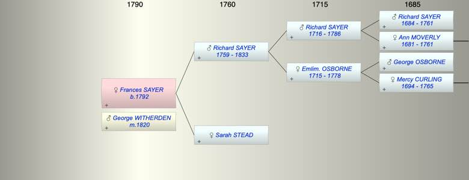

| [Index] |
| Frances Mary SAYER (1792 - ) |
|  |
| b. 23 Nov 1792 at St Laurence |
| m. 01 Jun 1820 George WITHERDEN at St Laurence |
| Parents: |
| Richard SAYER (1759 - 1833) |
| Sarah STEAD |
| Events in Frances Mary SAYER (1792 - )'s life | |||||
| Date | Age | Event | Place | Notes | Src |
| 23 Nov 1792 | Frances Mary SAYER was born | St Laurence | Note 1 | ||
| 01 Jun 1820 | 27 | Married George WITHERDEN | St Laurence | ex FMP | |
| 1833 | 41 | Death of father Richard SAYER (aged 74) | St Laurence | Note 2 | |
| Note 1: bap St Laurence 25 Dec 1792 ex FMP PR |
| Note 2: buried St Laurence 26 Jun 1833, aged 73 ex FMP PR |
| Created on a Mac™ using iFamily for Mac™ on 8 Oct 2023 |